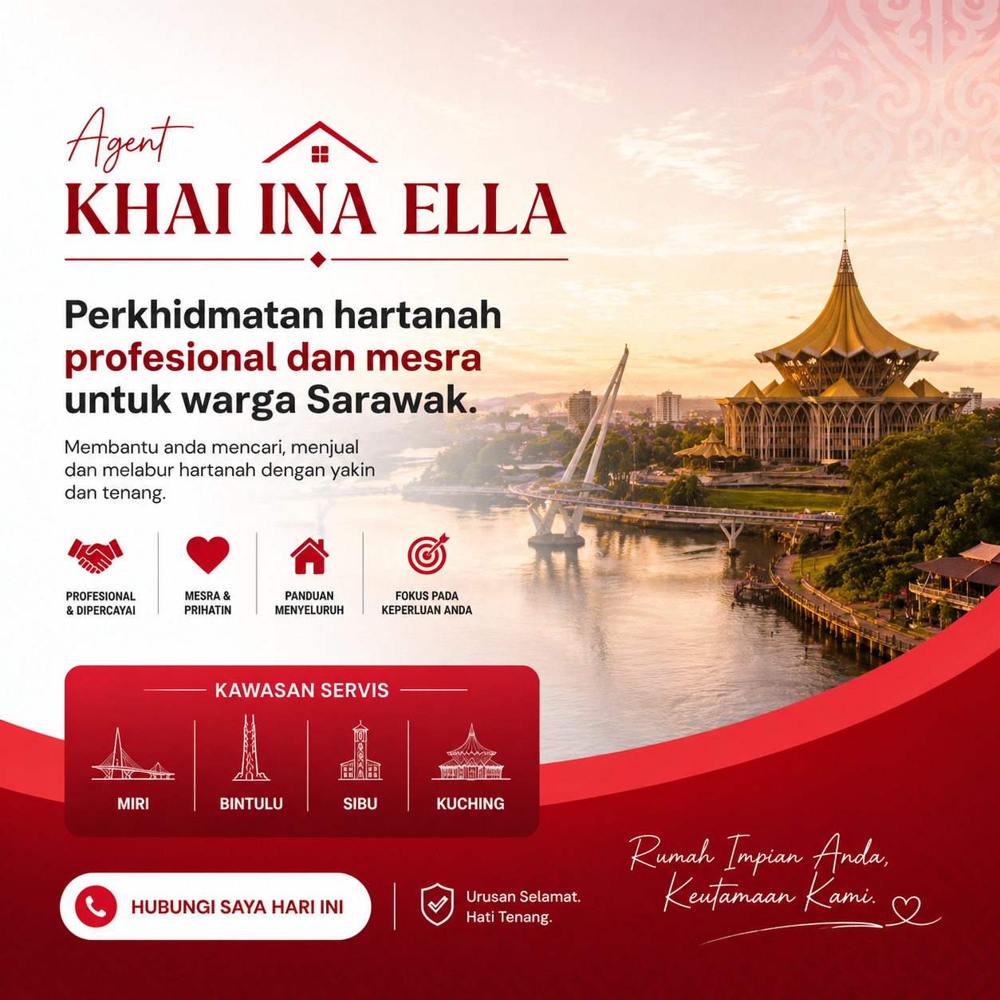
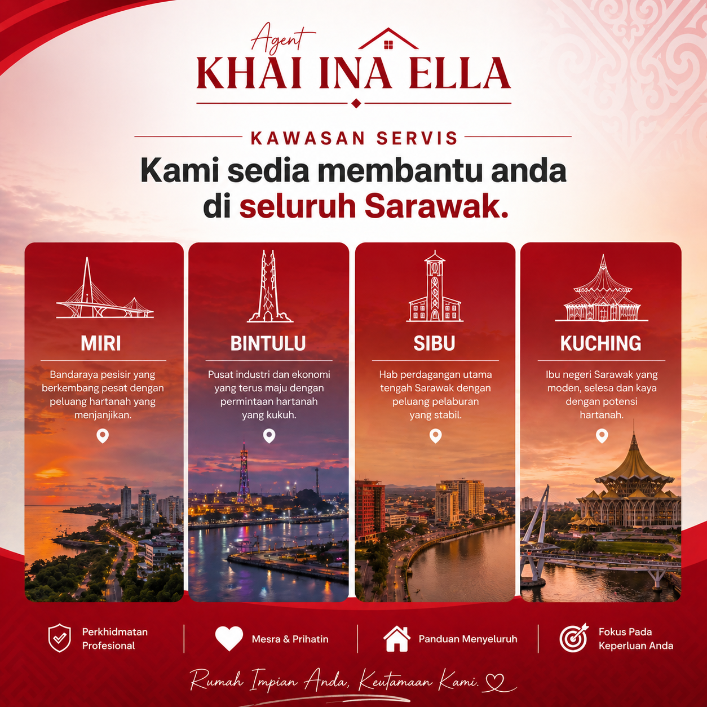
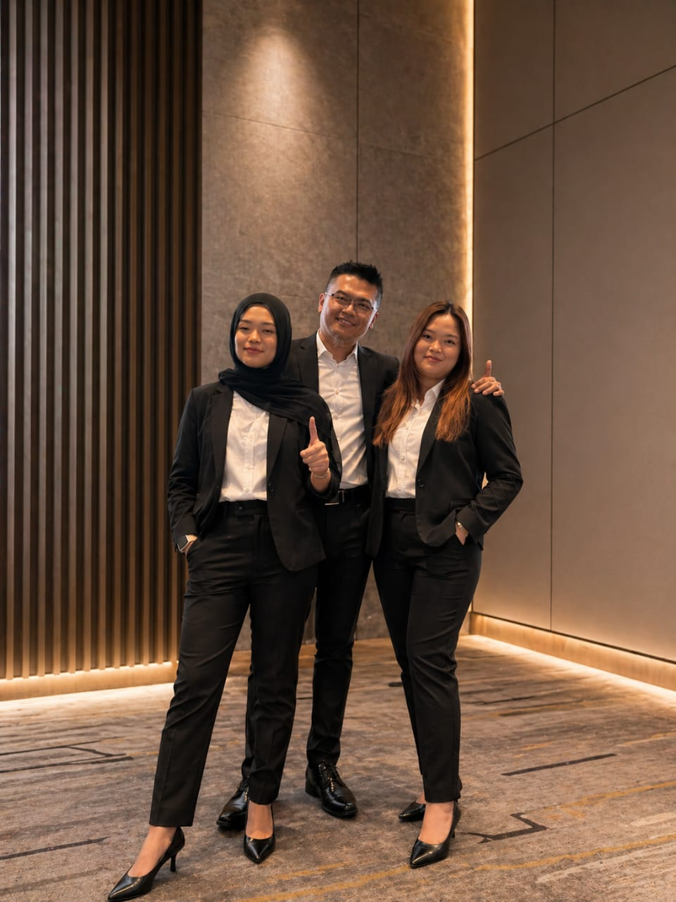

Tak tahu kelayakan loan
Kita semak potensi awal supaya anda tak buang masa.
Ejen Hartanah Sarawak
Kami membantu anda membeli, menjual dan melabur hartanah dengan panduan profesional, telus dan dipercayai.

Ramai pembeli di Sarawak hadapi perkara sama sebelum berjaya miliki rumah pertama.
Kita semak potensi awal supaya anda tak buang masa.
Kami tapis pilihan ikut bajet, lokasi dan keutamaan keluarga.
Setiap langkah diterangkan ringkas supaya anda jelas keputusan.
Kami bantu elak risiko dokumen, timeline dan kos tersembunyi.
Kami bantu kira ansuran dan bajet supaya lebih selamat untuk jangka panjang.
Kami terangkan potensi kawasan ikut keperluan keluarga atau objektif pelaburan anda.
Kami bantu anda dari A sampai Z supaya semua urusan jadi mudah dan lancar, dari semakan awal sampai serah kunci.

Semak Kes Anda di WhatsAppKami adalah sebuah team hartanah keluarga yang komited membantu anda memiliki, menjual, atau melabur dalam hartanah dengan proses yang mudah, telus dan profesional.
Dengan gabungan pengalaman industri dan latar belakang akademik yang kukuh, kami memberikan solusi terbaik mengikut keperluan anda.

Berpengalaman sebagai broker hartanah selama 8 tahun dan kini merupakan Ejen Hartanah Berdaftar dengan pengalaman 5 tahun dalam industri. Mahir dalam urusan jual beli, rundingan harga serta strategi pemasaran hartanah.
Bachelor of Science in Property and Construction Management (Hons). Mempunyai kepakaran dalam aspek teknikal hartanah, pengurusan pembinaan serta penilaian potensi pelaburan.
Bachelor of Commerce (Human Resource Management). Fokus kepada komunikasi pelanggan, pengurusan hubungan klien dan memastikan setiap urusan berjalan lancar dari A hingga Z.
Setiap proses, dokumen dan kos diterangkan secara jelas.
Bukan sekadar jual, kami cari pilihan yang sesuai kemampuan.
Soalan dan update anda dijawab cepat melalui WhatsApp.
Bantu pilih unit, semak dokumen dan susun langkah pembelian.
Strategi pemasaran dan positioning supaya listing lebih menonjol.
Nilai potensi kawasan dan padankan dengan objektif pelaburan.
Kawasan liputan aktif: Miri, Bintulu, Sibu, Kuching.
Dapatkan Cadangan HartanahKongsi bajet, lokasi sasaran dan objektif anda.
Kami semak kelayakan asas dan cadangkan pilihan sesuai.
Bantu urus viewing, rundingan dan penyediaan dokumen.
Kami pantau proses hingga urusan selesai dengan yakin.
Testimoni pelanggan yang telah dibantu untuk beli, jual dan rancang pelaburan hartanah di Sarawak.
“Saya ingat proses beli rumah susah, tapi team terangkan satu-satu sampai saya yakin sign offer. Sangat membantu.”
“Respon WhatsApp laju, bila ada soalan pasal loan terus dibantu semak dokumen. Jimat banyak masa.”
“Paling saya suka, agent jujur tentang kos dan timeline. Tak ada janji kosong. Proses berjalan sangat smooth.”
“Rumah yang dicadangkan memang ikut bajet dan keperluan keluarga. Dari viewing sampai final semuanya teratur.”
“Sebagai first buyer, saya zero knowledge. Selepas dibimbing, saya faham proses penuh dan berjaya beli rumah pertama.”
“Bila nak jual rumah, strategi pemasaran yang diberi memang menjadi. Listing cepat dapat enquiry berkualiti.”
“Tak pernah rasa ditinggalkan. Setiap update progress sentiasa diberitahu. Sangat profesional dan mesra.”
“Saya minta fokus kawasan tertentu sahaja, dan agent terus shortlist pilihan yang betul-betul relevan.”
“Urusan dokumen yang saya takut sangat sebelum ni jadi mudah sebab semua checklist diberi jelas.”
“Untuk tujuan pelaburan, cadangan lokasi dan kiraan pulangan sangat membantu saya buat keputusan tepat.”
Ya, kami bantu semakan awal kelayakan dan dokumen asas sebelum langkah seterusnya.
Tak susah jika ada panduan betul. Kami pecahkan proses kepada langkah mudah difahami.
Untuk semakan awal, anda boleh WhatsApp dulu. Kami terangkan skop bantuan berdasarkan kes anda.
Boleh. Kami bantu dari positioning listing, promosi, sehingga urusan rundingan.
Ya, kami bantu nilai potensi hartanah ikut lokasi, sasaran sewa, dan objektif pelaburan anda.
Klik butang WhatsApp dan kongsi keperluan anda. Kami akan susun langkah pertama dengan cepat.
Slot konsultasi harian adalah terhad. Lagi awal anda hubungi, lagi cepat kami boleh bantu anda bergerak.
Hubungi Kami Sekarang